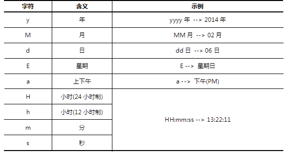

Java中的时间使用标准类库的Date类表示，是用距离一个固定时间点的毫秒数（可正可负，long类型）表达一个特定的时间点。
固定的时间点叫纪元（epoch），是UTC时间1970年 1月 1日 00:00:00。
UTC（Universal Time Coordinated世界调整时间）与GMT（Greenwich Mean Time格林威治时间）一样，是一种具有实际目的的科学标准时间。
java.util.Date 类封装日期及时间信息。
Date类的大多数用于进行时间分量计算的方法已经被Calendar取代。查看如下代码：
- Date date = new Date();
- // 系统当前的日期及时间信息
- System.out.println(date);
- // Sun Jan 06 11:52:55 CST 2013
- long time = date.getTime();
- //1970年1月1日至今的毫秒数
因为Date的设计具有"千年虫"以及"时区"的问题，所以Date中的大部分方法已经不建议使用了，它们都被java.util.Calendar类所取代，该类我们稍后会讲解。
- void setTime(long time):
该方法用于为一个Date对象设置其需要表示的时间，该参数为一个long值，其含义是需要表示的这个时间点距离1970年1月1日 00:00:00之间的毫秒差。
- long getTime()
该方法用于获取一个Date对象所表示的时间点，该返回值为一个long值，表示该时间点距离1970年1月1日 00:00:00之间的毫秒差。
Date重写了toString()方法，用一个字符串来描述当前Date对象所表示的时间。
格式如下:
- Mon Feb 17 15:36:55 CST 2014
由此我们可以看出，实际上Date的toString()方法返回的字符串虽然很清晰的描述了时间，但是对于非英语地区来讲，该字符串不够友好，我们更希望按照特定地区表示时间的方式。比如我们更习惯以下的风格:
- 2014-02-17 15:36:55 星期一
那么有没有方式可以代替 Date的toString()方法来获取一个特定格式的字符串呢？答案是肯定的,java为我们提供了一个类，叫做SimpleDateFormat,该类就可以完成。下面我们来学习一下这个类。
SimpleDateFormat 是一个以与语言环境有关的方式来格式化和解析日期的具体类。它允许进行格式化（日期 -> 文本）、解析（文本 -> 日期）和规范化。
简单的说，SimpleDateFormat就是根据一个特定的日期格式在字符串与Date之间相互转换。那么这个特定的日期格式是怎样定义的呢？下面我们来学习一下如何定义日期格式字符串。
日期模式的匹配字符串如表－1所示。
表－1 日期模式匹配字符串
例如: yyyy年MM月dd日--HH:mm:ss 可以匹配 2014年01月06日--13:22:41
将Date格式化为String，我们需要使用SimpleDateFormat提供的方法:
- String format(Date d)
例如:
- Date now = new Date();//默认实例化的Date表示当前系统时间
- SimpleDateFormat sdf = new SimpleDateFormat("yyyy-MM-dd HH:mm:ss");
- String str = sdf.format(now);
- System.out.println(str);//2014-01-06 13:21:12
将String格式化为Date，我们需要使用SimpleDateFormat提供的方法:
- Date parse(String s)
例如:
- String str = "2008年08月08日 12:22:46";
- SimpleDateFormat sdf
- = new SimpleDateFormat("yyyy年MM月dd日 HH:mm:ss");
- Date date = sdf.parse(str);
- System.out.println(date);// Fri Aug 08 12:22:46 CST 2008
java.util.Calendar 类用于封装日历信息，其主要作用在于其方法可以对时间分量进行运算。
Calendar是抽象类，其具体子类针对不同国家的日历系统，其中应用最广泛的是GregorianCalendar（格里高里历，即通用的阳历），对应世界上绝大多数国家/地区使用的标准日历系统。
Calendar是抽象类，其提供了一个工厂方法:Calendar getInstance()。该方法可以根据当前系统所在地区获取一个适当的Calendar的子类实现。
在实际开发中，也推荐使用该方法来实例化Calendar的对象。
Calendar提供了一种通用的设置时间的方式:
- void set(int field,int value)
该方法可以通过对不同的时间分量分别设置不同的值。Calendar对不同的时间分量提供了相应的常量，我们在使用set方法设置时，第一个参数就应当使用对应的常量作为时间分量。
- Calendar calendar = Calendar.getInstance();//创建出的Calendar表示当前系统时间
- //设置年为2008年
- calendar.set(Calendar.YEAR,2008);
- //设置月为5月
- calendar.set(Calendar.Month,4);//月份从0开始
- calendar.set(Calendar.Month,Calendar.MAY);//也可以使用常量来设置
- //设置日为30日
- caneldar.set(Calendar.DAY_OF_MONTH,30);
Calendar提供了一种通用的获取时间分量的方式:
- int get(int field)
该方法可以通过对不同的时间分量获取相应的值。Calendar对不同的时间分量提供了相应的常量，我们在使用get方法获取时，参数就应当使用对应的常量作为时间分量。
- Calendar calendar = Calendar.getInstance();
- int year = calendar.get(Calendar.YEAR);
- int month = calednar.get(Calendar.Month);
- int date = calendar.get(Calendar.DAY_OF_MONTH);
- //需要注意，月份要加1，因为月份是从0开始的
- System.out.println(year+"-"+(month+1)+"-"+date);//2014-1-4
int getActualMaximum(int field)方法用于获取给定时间分量所允许的最大值
例如:
获取当前系统时间中当月的最后一天(日所允许的最大值)
- Calendar calendar = Calendar.getInstance();
- int max = calendar. getActualMaximum(Calendar.DAY_OF_MONTH);
- System.out.println("当前月的最后一天为:"+max+"日");//当前月的最后一天为31日
Calendar还允许我们使用统一的方式来对某个时间分量的值进行计算。我们需要使用方法 void add(int field,int amount)。该方法可以为某个时间分量的值加上给定的值，若想减去给定的值，那么传入的值需要是负数即可。并且计算后会自动进行相应的进位，例如若当前为月底，那么加一天后，为下个月的月初，而月就会进位。
例如: 当前系统时间为 2014-01-31日
- Calendar calendar = Calendar.getInstance();
- //计算明天(在日的基础上加一天)
- calendar.add(Calendar.DAY_OF_YEAR,1);//当前Calendar表示的为2014-02-01，月进位了
Calendar的void setTime(Date date),允许我们为Calendar设置Date对象所表示的时间。
Calendar的 Date getTime(),允许我们获取一个使用Date对象描述的Calendar所表示的时间。
例如:
- Calendar calendar = Calendar.getInstance();
- Date date = calendar.getTime();
- System.out.println(date);// Mon Feb 17 15:36:55 CST 2014
java提供了一种可以存数一组数据的数据结构，其提供了丰富的方法，在实际开发中往往比数组使用的广泛。这种数据结构成为集合:Collection。
Collection是一个接口，其定义了集合的相关功能方法。
Collection派生出了两个子接口，一个是List另一个则是Set。
List:称为可重复集，顾名思义，该集合中是允许存放重复元素的，那么何为重复元素？重复元素指的并非是同一个元素，而是指equals方法比较为true的元素。
Set:称为不可重复集，所以，该集合中是不能将相同的元素存入集合两次，同List，这里相同指的也是两个元素的equals比较结果为true。
集合中存储的都是引用类型的元素，那么引用类型变量实际上存储的是对象的“地址”，所以实际上集合只存储了元素对象在堆中的地址。而并不是将对象本身存入了集合中。
Collection定义了一个add方法用于向集合中添加新元素。 该方法定义为:
- boolean add(E e)
该方法会将给定的元素添加进集合，若添加成功则返回true,否则返回false
例如:
- Collection<String> c = new ArrayList<String>();
- System.out.println(c); // []
- c.add("a");
- c.add("b");
- c.add("c");
- System.out.println(c); // [a, b, c]
这里Collection后面的<String>是泛型，我们后面会讲解，这里不写也没有关系。
- boolean contains(Object o)
该方法会用于判断给定的元素是否被包含在集合中。若包含则返回true,否则返回false。
这里需要注意的是，集合在判断元素是否被包含在集合中是使用元素的equals的比较结果。
(o==null ? e==null : o.equals(e)) 其中e是集合中的元素。
例如:
- Collection<Cell> cells = new ArrayList<Cell>();
- cells.add(new Cell(1, 2));
- cells.add(new Cell(1, 3));
- cells.add(new Cell(2, 2));
- cells.add(new Cell(2, 3));
- Cell cell = new Cell(1, 3);
- // List集合contains方法和对象的equals方法相关
- boolean flag = cells.contains(cell);
- // 如果Cell不重写equals方法将为false
- System.out.println(flag); // true
size方法用于获取当前集合中的元素总数。该方法定义为:int size()
clear方法用于清空集合。该方法定义为:void clear()
isEmpty方法用于判断当前集合中是否不 包含元素。该方法定义为:boolean isEmpty()
例如:
- Collection<String> c = new HashSet<String>();
- System.out.println(c.isEmpty()); // true
- c.add("java");
- c.add("cpp");
- c.add("php");
- c.add("c#");
- c.add("objective-c");
- // isEmpty:false, size: 5
- System.out.println("isEmpty:" + c.isEmpty() + ",size: " + c.size());
- c.clear();
- // isEmpty:true, size: 0
- System.out.println("isEmpty:" + c.isEmpty() + ", size: " + c.size());